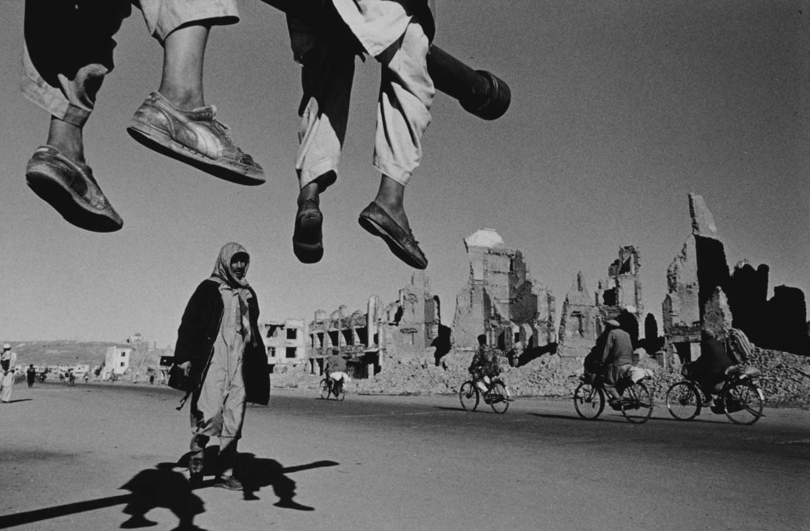
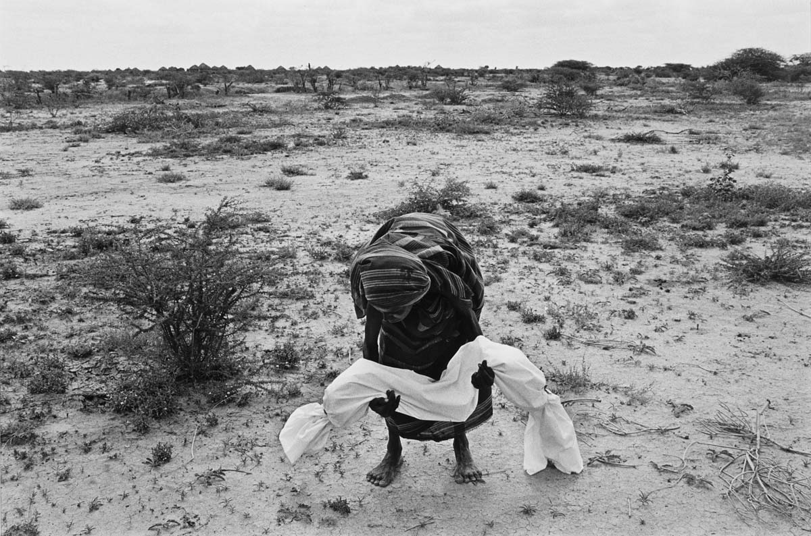
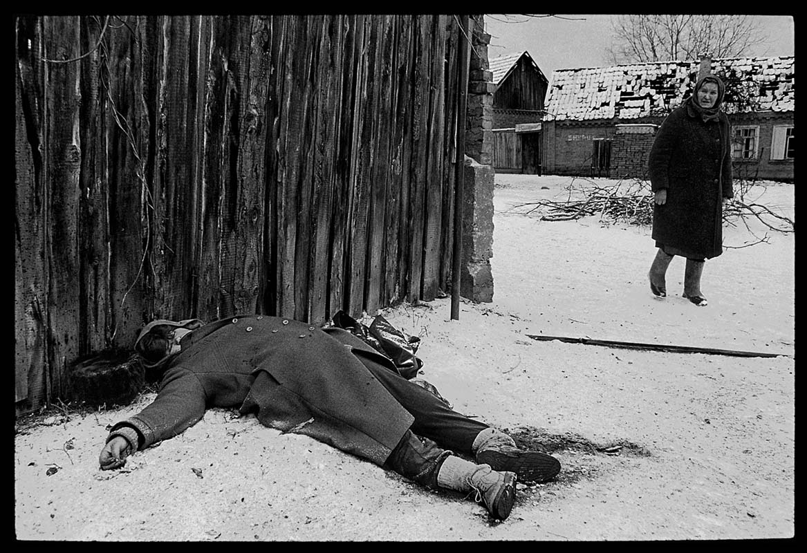
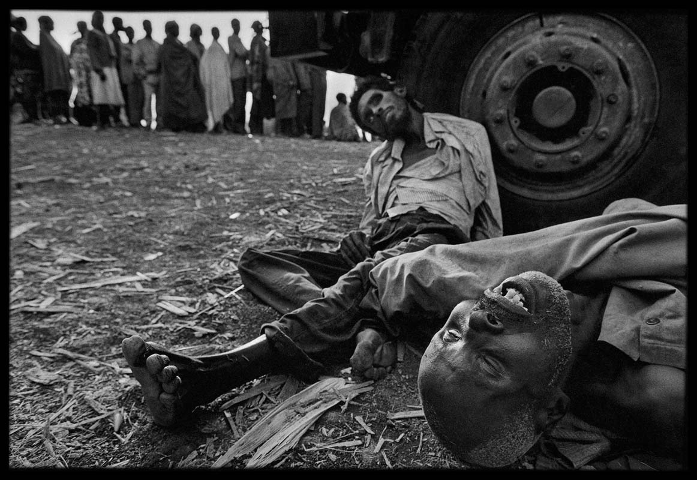
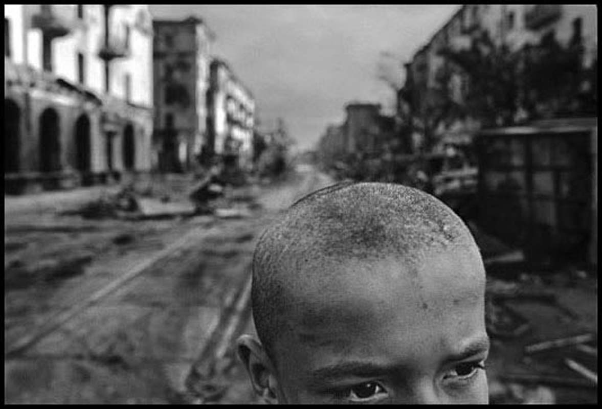
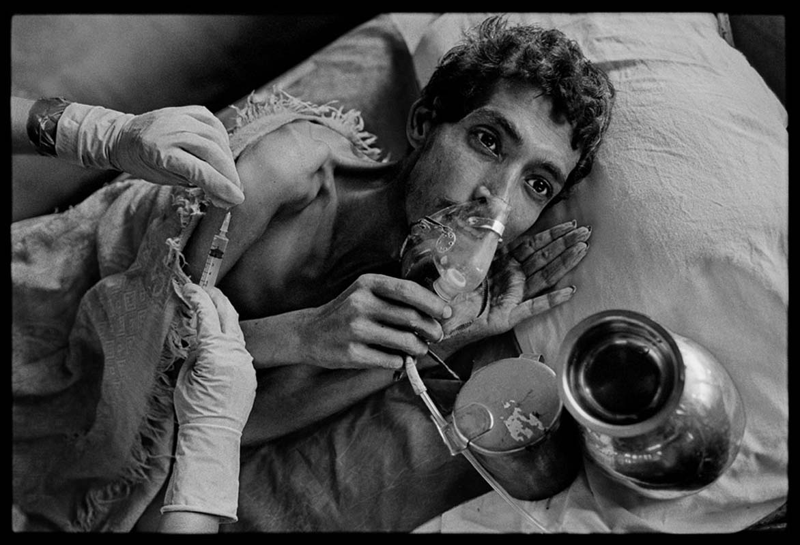
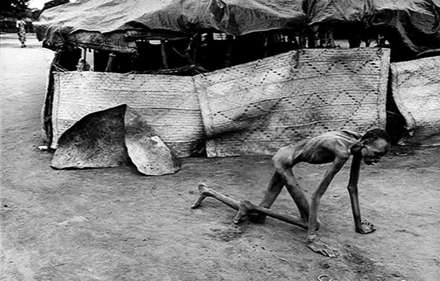
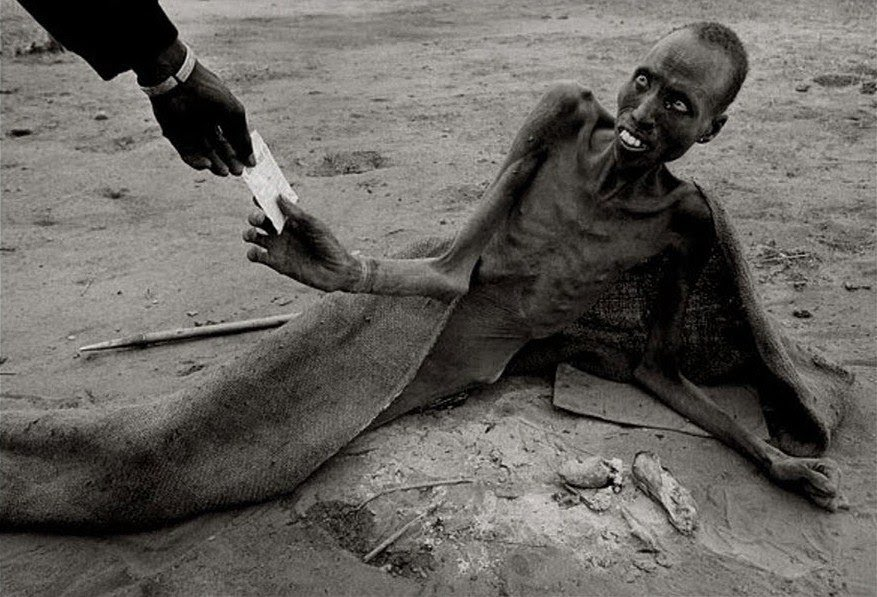
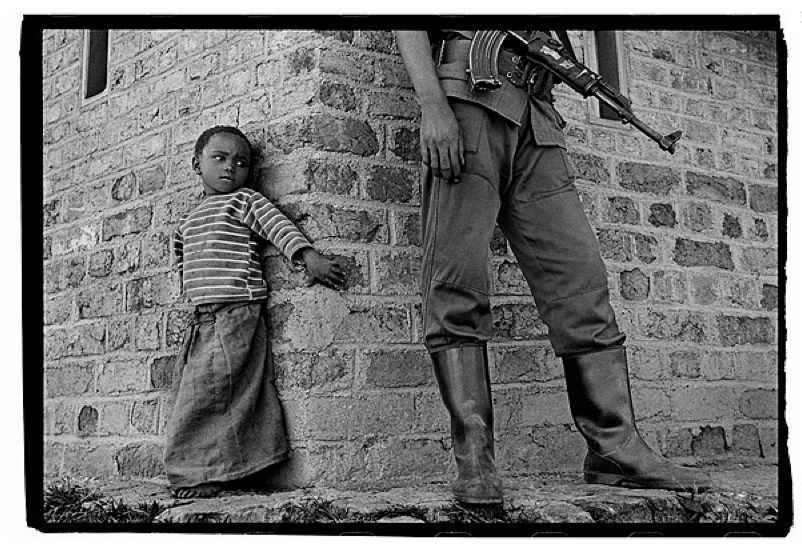

is it possible?
to put an end to a form of human behavior which has existed throughout history by means of photography?
the proportions of that notion seem ridiculously out of balance. Yet, that very idea has motivated me.
it has occured to me that if everyone could be there just once
-
to see for themselves what white phosphorous does to the face of a child

-
or what unspeakable pain is caused by the impact of a single bullet

-
or how a jagged piece of shrapnel can rip someone’s leg off

if everyone could be there to see for themselves..
the fear and the grief

just one time, then they would understand that nothing is worth letting things get to the point where that happens to even one person, let alone thousands.
but everyone cannot be there, and that is why photographers go there

to show them, to reach out and grab them and make them stop what they are doing and pay attention to what is going on
-

to create pictures powerful enough to overcome the diluting effects of the mass media and shake people out of their indifference
-

Rwanda
-

to protest and by the strength of that protest to make others protest.
-

the act of being an outsider aiming a camera can be a violation of humanity.
the only way I can justify my role is to have respect for the other person’s predicament.
the extend to which I do that is the extent to which I become accepted by the other, and to that extent I can accept myself.
I have been a witness, and these pictures are my testimony. The events I have recorded should not be forgotten and must not be repeated.